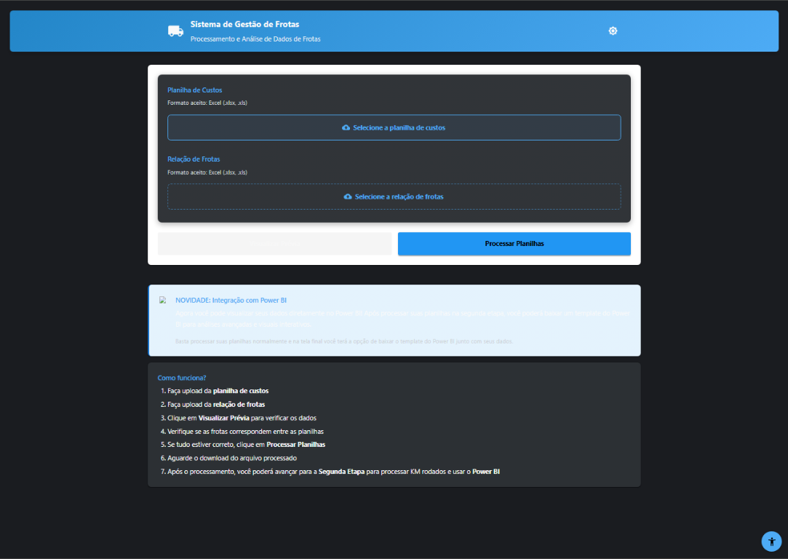

TELA DO SISTEMA · CLIQUE PARA ACESSAR
PROJETO 01
Já utilizado na operação
Despesas de Frotas
Criei esta aplicação para processar planilhas e facilitar a consulta de despesas por veículo, a partir de uma dificuldade que observei na logística.
O problema
A consulta dos custos da frota gerava retrabalho e dificultava encontrar as despesas de cada veículo.
O que fiz
Estudei o processo, desenvolvi a ferramenta por iniciativa própria e apresentei ao meu encarregado. A proposta foi bem recebida e o sistema foi utilizado na operação por um período.
Processamento de planilhas
Custos por veículo
Aplicação web